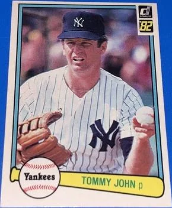

Tommy John "The Bionic Man"
Career Highlights & Facts
(Facts are AI-generated and may require verification)
- Became the namesake for a revolutionary surgical procedure that saved countless pitching careers.
- Achieved 288 career victories across 26 seasons of professional play.
- Returned to the mound to win 21 games in a single season after undergoing a groundbreaking ligament replacement surgery.
Would you like to find out more about Tommy John?
Player Biography
Tommy Johns May 22, 2017 / in BioProject - Person One-gamers / by admin This article was written by Bill Hickman At first blush, there isn’t much to say about Tommy Johns – at least as a ballplayer. He played in one major-league game with the short-lived 1873 Baltimore Marylands of the National Association, and hardly distinguished himself. He came up to bat four times and made four outs. As a left fielder, he had one fielding opportunity and muffed it. That was his career. Yet it landed him a place in the baseball encyclopedias. Tommy Johns made a deeper and more lasting impact, however, as a builder. He operated his own construction firm and spent more than 35 years as a major force in the building trade in Baltimore. Examples of his works include the Red Brick Courthouse in Rockville, Maryland and the First Church of Christ, Scientist in Baltimore. Both buildings are on the National Register of Historic Places. Thomas Pearce Johns was born on September 7, 1851 in Baltimore. His parents were Richard Henry (Sr.) and Margaret Ann Pearce Johns. Richard Sr. was a carpenter and renowned boat builder. The father must have passed many of his skills along to his son, because census data showing Thomas as a young adult reported him to be a carpenter as well. As a teen, he attended the McKim School in Baltimore, according to the records on Thomas Johns residing in the Baseball Hall of Fame Library Richard Johns Sr. and Margaret raised a large family. They were 1) Richard H. Jr., born 1849, 2) Thomas, 3) William I., born c. 1853, 4) Lydia (aka “Lilly” and “Lucy“), born c. 1855, 5) John S., born c. 1857, 6) Robert E. L., born c. 1861, 7) Calvin A., born c. 1866, and 8) Wade H., born c. 1868. Richard Johns Jr. was also part of the major league baseball world. He umpired in one game, that too in the 1873 National Association. His name was associated with the 20-0 romp by the Baltimore Canaries over the Marylands that June 27. Like his brother, Richard had greater roles in life outside baseball. He was an attorney and Justice of the Peace for the City of Baltimore. In 1911, he ascended to an even more prominent position. Under Mayor James Preston, he was appointed President of the Baltimore Fire Board. He remained in that position until his death in 1916. He succeeded in expanding the fire department, whose force grew 12 per cent from 1910 to 1916. Thomas played in his one major league game at age 21 on May 14, 1873 against the Canaries, also known as the Lord Baltimore Baseball Club. The game was played at Newington Park on Pennsylvania Avenue on the northwest side of Baltimore, where Thomas and his teammates were the visitors. The Baltimore Sun reported on the competition as “The Lord Baltimores and Maryland Clubs played, or rather wandered through a game of baseball yesterday afternoon, at the grounds, on Pennsylvania Avenue.” Then the newspaper presented the line score, and that completed its report. Thomas Johns did not know it at the time, but perhaps the most exciting aspect of that game for him was facing future Hall of Fame pitcher Candy Cummings , who was the starter for the Canaries. Cummings spent most of his life claiming that he invented the curveball. The Cummings biography by David Fleitz at the SABR BioProject acknowledges that Jim Creighton preceded him in throwing a ball with a quick jerk of the wrist, but Fleitz credits Cummings with being the first to make the ball curve in the air by rolling it off the second finger. Even Johns’ team wasn’t so historically important. The Baltimore Marylands lasted as a major-league team for only six games, failing to win any of them. They didn’t even come close, losing 24-3, 27-7, 26-5, 20-0, 35-1, and 20-10. But the National Association, the league in which they played, is a part of our legacy. The NA’s Boston Red Stockings of 1873 were the forerunner of the Boston Braves, who moved to Milwaukee and later relocated again to become today’s Atlanta Braves. So a direct lineage continues from 1873 to the present. Nonetheless, the roots of the Marylands ran deeper. In Players and Teams of the National Association, 1871-1875 , Paul Batesel cites the work of Brian McKenna in listing the Maryland Club of Baltimore as one of the prominent teams in that city throughout the 1860s. Its record included winning the state championship in 1866, 1867, and 1868 as an amateur team. It turned professional in 1869, which meant that its players received a share of the gate. As a professional club before joining the National Association, it faced such notable teams as the Cincinnati Red Stockings, the Fort Wayne Kekiongas, the New York Mutuals, the Eckford of Brooklyn, the Olympics of Washington, the Philadelphia Athletics, and the Atlantic Club of Philadelphia. Per Batesel, “The 1873 Maryland team was a reorganized club, described as a combination of the best players of the earlier Maryland and Pastime clubs, with the addition of talented amateurs.” As best we can discern, Thomas had been one of those amateurs until he made his appearance with the Maryland club. The 1880 census revealed that Johns was still residing at home with his parents and making a living as a carpenter. In the years 1877-88, he worked on a $2,533 contract to make repairs to various Baltimore buildings. They included the Fire Department Engine House #9, the Belair Market at Forest and Orleans Streets, the Truck House #1, and the Colored School House on East Street. Newspaper searches find Johns associated with building and real estate activity from 1882 through 1925. The earliest construction award discovered for Thomas Johns’ firm was in 1882 for the building of new sheds in the Lexington Market. The contract was for $3,898, a reasonable amount with which to work at the time. Those familiar with Baltimore know that the Lexington Market remains a popular spot for grabbing a great bite to eat, like oysters on the half shell, or for purchasing fresh produce to take home. In 1884, Johns was the winning bidder in the competition for building the Northeastern Market House at Monument and Charles Streets in Baltimore. He was awarded the contract in the amount of $6,285. That location would have been next to Baltimore’s Washington Monument, built in 1815, which remains the heart of an attractive neighborhood. In 1885, he won a contract to build an addition onto the Fire Engine House No. 6 in Baltimore. That contract was for $4,191. He was still gaining business, but had not yet hit the big time. The first large building discovered among Johns’ works was the H.F. Miller & Sons factory. It was a four-story tin can and box plant erected in 1889 at the corner of Oak and Seventh Streets in Baltimore. Its planned dimensions were 100 feet along Seventh Street and 40 feet along Oak Street. The two streets no longer intersect in Baltimore, so the building no longer stands. The first of the memorable buildings that Johns constructed was the Red Brick Courthouse in Rockville, Maryland. He was paid $45,327 to build it. It is in Romanesque Revival style. When the Red Brick Courthouse opened in 1891, it served not only as the local court for general legal matters but also as an Orphans’ Court. It stands in the historic center of town, and its upper chamber was still in use as a Montgomery County Circuit courtroom until 2014. On the lower floor is housed the office of Peerless Rockville, which is the city’s historical society. In 1986, the courthouse was placed on the National Register of Historic Places. Its architect was Frank E. Davis of Baltimore, who produced nearly 150 works in his lifetime, including three other Maryland courthouses, in Cumberland, Upper Marlboro, and Princess Anne. In 1898, Johns was named to the Mayor’s Committee to come up with recommendations to improve the sanitary conditions in Baltimore schools. In 1901, Johns built the St. James First African Protestant Episcopal Church at the northwest corner of Park Avenue and Preston Street in Baltimore. The building no longer exists today, but the congregation has moved to the St. James Episcopal Church on Lafayette Square. The year 1904 saw Johns and his firm constructing a large five-story building at 8, 10, and 12 East Baltimore Street to accommodate the needs of Likes, Berwanger & Co., a manufacturer of men’s clothing. That edifice has been replaced by a more modern office building currently owned by W. R. Grace. According to Johns’ great-granddaughter, Nancy Millspaugh Cohn, 1904 was generally a lucrative year for him. He was able to capitalize on the market for rebuilding structures following the Great Baltimore Fire of that year. In 1906, he constructed the Friedenwald Building at the corner of Oliver and Greenmount Streets in Baltimore. The Friedenwald Company was in the business of publishing, bookbinding, and producing lithography. It specialized in Jewish publications. In 1908, the firm was renamed the Lord Baltimore Press and the edifice became known as the Lord Baltimore Press Building. In 1985, it housed the Department of Social Services. It was mentioned as part of the application for bringing the Greenmount District onto the National Register of Historic Places because of the importance of the buildings contained within it. The Friedenwald Building’s architects were Ballinger and Perot, the same Philadelphia firm which designed the original RCA Victor plant in Camden, New Jersey. This was the plant which produced the Victor Talking Machine, the early version of the phonograph, which introduced musical entertainment into the American home. In 1908, the Baltimore Sun was hailing the grand opening of two cottages which were add-ons to the facility at the Jewish Hospital for Consumptives in Reisterstown, Maryland, a northwestern suburb of Baltimore. Thomas Johns had built those cottages. The hospital cared for patients with tuberculosis, and had been constructed by Johns’ firm. He was awarded the contract for that construction in 1907, according to the Baltimore American of November 13, 1907. The hospital had been located on Westminster Pike, but no longer exists. Prior to its demolition, it had become known as Mt. Pleasant Hospital. Over the 1911-1913 period, Thomas Johns built the First Church of Christ, Scientist in Baltimore. Its address is 102 W. University Parkway, across from the campus of Johns Hopkins University. The architect was Charles E. Cassell of Baltimore, who was also the architect of the beloved 1889 University Chapel at the University of Virginia. The style of the First Church of Christ, Scientist included a Greek Revival influence on both the exterior and interior. The church remains very much in use. The building was added to the National Register of Historic Places in 1982. In 1916, Johns was awarded a $15,000 contract to construct the G. F. Bucholz Garage at 321 Monument Street in Baltimore. The firm began in 1901 as The Motor Carriage Company, and the garage was built as an automobile showroom. There were other cases in which Johns added on to existing buildings in Baltimore. In 1904, he built a two-story brick addition to the property at 411 North Charles Street and added a library. The building is currently a combination office and retail use. Around 1913, he added a parish house to the property of St. Mary the Virgin Episcopal Church at 406-408 Orchard Street. Over the years, there were many newspaper reports of Johns’ involvement in real estate sales. It is assumed that he had bought many properties and erected structures on them, and then once they were completed, he sold them to new owners. As a successful businessman, Johns made sure that he maintained his social connections in Baltimore. Early on, he was spotted as a member of the Independent Order of Odd Fellows. The Baltimore Sun of April 27, 1876 reported him in an Odd Fellows procession. An 1889 newspaper article cited him as a member of The Jack and Jill Club, a social organization for well-known business and professional men. In 1898, he was involved in the incorporation of the United Fraternal Accident Order. In 1907 and 1909, there were mentions of his membership in the Grand Council of the Royal Arcanum, another fraternal organization. He was also known to be a Mason. In 1907, he was cited as a member of the Master Builders’ Association. Johns was active politically as well. For example, the Baltimore Sun of January 3, 1899 reported that he was among the visitors at the Columbian Club on hand to salute Mayor William T. Malster. In 1875, he was elected as a delegate to the convention for nominating candidates for the State House of Delegates. Johns also did charitable work with his church, Trinity Episcopal Church. He served on its building committee in 1894 to make major improvements both to the structure and interior and acted as superintendent of its Sunday school. In later years, he served on the church’s vestry. Trinity Episcopal Church was located at the corner of Broadway and Pratt Streets. Thomas Johns had an enterprising spirit. Take, for example, two corporations he established as sidelines to his work in the building trade. In 1898, he was one of five principals who established the Standard Baking Company with a stock issuance of $15,000. In 1901, he and another group of four executives incorporated a firm called the Mills Screw Top Mill Can Company for the purpose of manufacturing a patented milk can. Turning to his family life, Thomas Johns married Lizzie A. “Annie” Clifford in 1886, and divorced her in 1891. That marriage produced one child, of whom Annie Clifford was given custody following the divorce. On November 27, 1895, Johns married his second wife, the former Agnes L. Methany (born circa 1865). She died on January 20, 1904, and he never married again. His second marriage produced a son, Thomas Morris (known as Morris), born December 13, 1898, and a daughter, Margaret, born March 25, 1900. After her marriage, Margaret became Mrs. Frederick Millspaugh, of Haddonfield, New Jersey. After Agnes Johns’ death, it became a difficult situation for Thomas Johns and his children. In January of 1904, he was 53 years old and his kids were only three and five years old. At first, his sister Lydia took on the responsibility of looking after the children while he attended to operating his construction business. Then his housekeeper and her daughter cared for them for a while. The housekeeper’s daughter, Ann Elizabeth “Lizzie” Cox, moved in and essentially became part of the family. When the two children became old enough, Johns placed them in boarding schools. Thomas Johns died on April 13, 1927 from pneumonia in Baltimore. He is buried in Greenmount Cemetery, along with a number of other members of the Johns family and Lizzie Cox. While edifices constructed by Thomas Johns still live on today, it is difficult to find direct signs of the man himself. But there is one place where one can observe a relic of him. On the ground floor of the Red Brick Courthouse in Rockville, there is a glass case which contains an iron beam from the original construction of the courthouse. The beam was rescued by Peerless Rockville when one of the renovations of the courthouse was undertaken. On that beam, one can clearly read the painted signature of Thomas P. Johns, Rockville, MD, just as he presumably applied it when he originally constructed the building. A Selection of Historically Important Buildings Constructed by Thomas Johns (Click on any of the thumbnails to see a full-size image with source) Acknowledgements Thomas “Mac” McElroy, of Fitchburg, Maryland, for countless hours helping me to research the life of Thomas Johns. Rory Costello, for his experience and professionalism in editing this piece. Nancy Millspaugh Cohn, Thomas Johns’ great-granddaughter, for providing background on the childhood of her grandmother. Margaret Millspaugh Shetka and Emily Johns Boyer, Thomas Johns’ granddaughters, for providing me information on their grandfather. Emily Turk and Martha Turk Meyers, Thomas Johns’ great-granddaughters. Cassidy Lent, Research Librarian, National Baseball Hall of Fame and Museum. Carlos Avery, for input on additional works by Thomas Johns. Photo credits Johns headshot: Courtesy of Margaret Millspaugh Shetka, granddaughter of Thomas Johns. Red Brick Courthouse, Rockville, Maryland: From the Collections of Peerless Rockville, photo by Max Van Balgooy. St. James Church, Baltimore, Maryland: http://stjamesonthesquare.org/our-heritage . Friedenwald Building, Baltimore, Maryland: ajcarchives.org . Jewish Hospital for Consumptives, Reisterstown, Maryland: Carrington, Thomas Speeds, Tuberculosis Hospital and Sanatorium Construction (New York: The National Association for the Study and Prevention of Tuberculosis, 1914). First Church of Christ, Scientist, Baltimore, Maryland: Frederic C. Chalfant. Sources Newspapers New York Commercial Advertiser , July 29, 1869 Wilmington (Delaware) Daily Commercial , August 2, 1869 Philadelphia Evening Telegraph , September 1, 1869 Harrisburg Telegraph , August 2, 1870 Fort Wayne (Indiana) Daily Gazette , August 6, 1970 Philadelphia Inquirer , April 25, 1870 Baltimore Sun , May 11, 1870 Baltimore Sun , May 15, 1873 Baltimore Sun , June 16, 1875 Baltimore Sun , April 22, 1882 Baltimore Sun , May 22, 1884 Baltimore Sun , May 6, 1885 Baltimore Sun , November 4, 1886 Baltimore Sun , August 23, 1889 Washington Evening Star , September 28, 1891 Baltimore Sun , October 29, 1891 Baltimore Sun , March 31, 1898 Baltimore Sun , April 20, 1898 Baltimore Sun , July 16, 1898 Baltimore Sun , April 10, 1899 Baltimore Sun , June 17, 1901 Baltimore Sun , August 13, 1901 Baltimore American , November 13, 1907 Baltimore Sun , October 26, 1908 Baltimore Sun , March 17, 1911 Baltimore American , July 9, 1911 Baltimore Sun , March 12, 1913 Baltimore Sun , November 7, 1916 Rockville Gazette , August 22, 1990 Books Paul Batesel, Players and Teams of the National Association, 1871-1875 , Jefferson, North Carolina: McFarland & Company, 2012. Richard Henry Spencer, Genealogical and Memorial Encyclopedia of the State of Maryland , New York: The American Historical Society, 1919. Magazines Johns Hopkins Nurses Alumnae Magazine , 1914 Fire and Water Engineering , Volume 60, 1916 Other Thomas P. Johns File at the National Baseball Hall of Fame Library National Register of Historic Places – Nomination Form for First Church of Christ, Scientist, Baltimore National Register of Historic Places – Nomination Form for Greenmount District Bill Hickman, “Old Rockville Courthouse …It Has a Surprising Baseball Connection,” 2010 Bethesda Big Train Souvenir Program, page 9 Greenmount Cemetery Lot Cards for the Johns Family, obtained by Thomas “Mac” McElroy HeritageQuest census data Robin J. Cook, “The Red Brick Courthouse,” December 7, 1988 (typed report contained in the files of Peerless Rockville) Red Brick Courthouse File at Peerless Rockville Full Name Thomas Pearce Johns Born September 7, 1851 at Baltimore, MD (USA) Died April 13, 1927 at Baltimore, MD (USA) Stats Baseball Reference Retrosheet If you can help us improve this player’s biography, contact us . Tags One-gamers · Share this entry Share on Facebook Share on X Share on LinkedIn Share on Reddit Share by Mail
Career Totals
| WAR | W | L | ERA | G | GS | SV | IP | SO | WHIP |
|---|---|---|---|---|---|---|---|---|---|
| 61.6 | 288 | 231 | 3.34 | 760 | 700 | 3 | 4710.1 | 2245 | 1.283 |
Statistics via Baseball-Reference.com
The Original Clue